SMAX 5m_vs_6m: five allied marines (blue) versus six enemy marines (green). Winning a numerically inferior fight requires a maneuver that plain reward maximization rarely discovers.
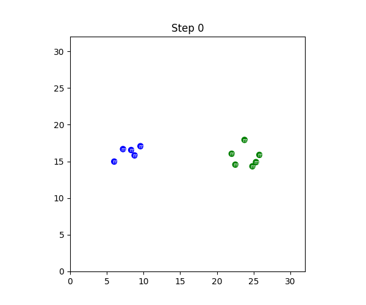
No exploration. The team engages head-on and is eliminated within a few steps.
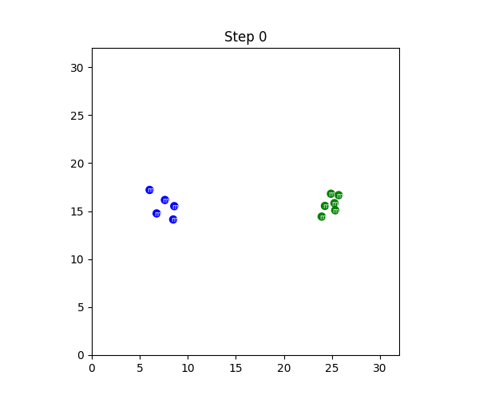
Explored maneuver. The team pulls back to a corner, stretches the pursuing enemy into a line, and defeats them.
Successful coordination occupies only a tiny subspace of the joint state-action space, so cooperative MARL leans on task-agnostic exploration signals. But a linearly mixed bonus can overshadow the task objective, and one agent's greedy exploration makes the environment non-stationary for its teammates, who mistake the temporary drop for failure and abandon the joint behavior.
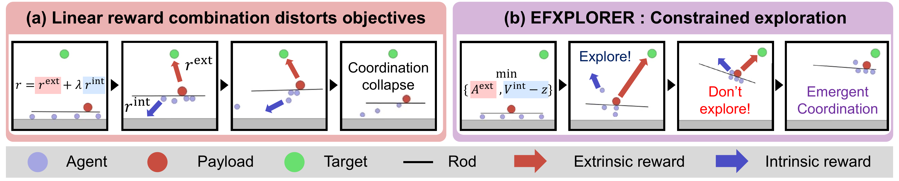
Cooperative balancing task with four agents transporting a payload on a rod to a target. (a) Naive linear reward combinations induce objective misalignment, destabilizing coordination. (b) EFXPLORER leverages a min-function to conservatively gate exploration, enabling coordination to emerge progressively without sacrificing task performance.
EFXPLORER maximizes each agent's intrinsic return subject to a non-degradation constraint on the joint extrinsic return, rewrites the problem in epigraph form, and solves it by alternating between a policy update against a stepwise min-bottleneck and an outer update of the exploration budgets.
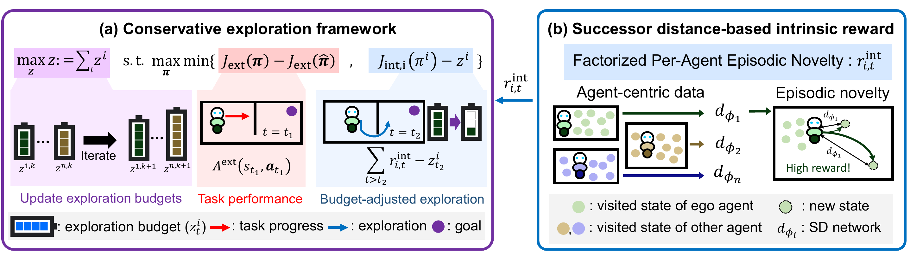
Overview of EFXPLORER. (a) Conservative exploration: the epigraph objective uses a min operator to balance task progress and budget-adjusted exploration, while an outer loop adapts the budget \(z\). (b) Factorized episodic novelty: per-agent successor distance (SD) networks estimate temporal proximity to derive individual intrinsic rewards \(r^{\mathrm{int}}_{i,t}\).
Constrained exploration, in epigraph form
The task-progress term and the intrinsic surplus over the budget \(z^i\) are coupled by a single min operator: exploration counts only when the team is not losing task performance relative to the reference policy \(\hat{\boldsymbol{\pi}}\). No trade-off coefficient is introduced.
The episode-level constraint is turned into a per-step signal by augmenting the state with the remaining budget. Each agent's update is driven by the smaller of the reference task advantage and its intrinsic surplus, which gives a conservative sufficient condition for feasibility and a standard likelihood-ratio policy gradient.
The outer loop grows the budgets \(z^i\) only from rollouts whose Monte Carlo task return beats a running reference. Among those feasible rollouts it picks the one with the largest collective intrinsic return and moves the budgets toward it with rate \(\alpha_z\). If nothing is feasible, the budgets stay put.
Each agent learns a quasimetric successor distance on its own state space with a symmetric InfoNCE objective. The intrinsic reward is the minimum learned temporal distance to the states already visited in the episode, so agents are pushed toward temporally distant states rather than locally surprising ones.
We evaluate on cooperative tasks from SMAX, VMAS, and MPE, including MPE-corridor, a new scenario that forces decentralized coordination in a narrow passage. All methods share the same backbone architecture and evaluation protocol. EFXPLORER improves normalized returns on both centralized-training (MAPPO) and independent-learner (IPPO) backbones. Baselines that inject intrinsic signals through social influence, entropy regularization, or enforced diversity (COIN, HASAC, DiCO) let those signals dominate learning, which destabilizes teammates and can collapse coordination.
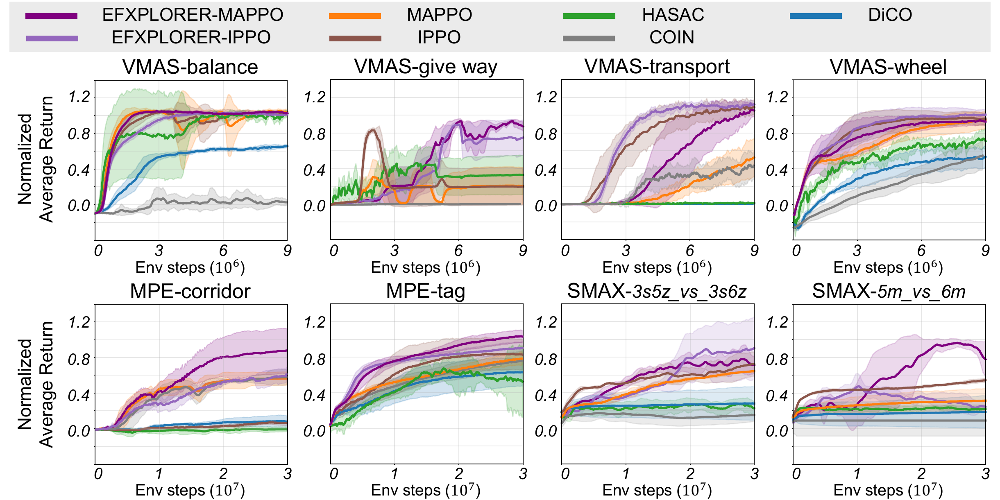
Performance comparison of EFXPLORER with cooperative MARL baselines. Solid lines show the mean over 5 random seeds, while shaded regions correspond to the standard deviation.
The same constrained objective can be attacked with a scalarized reward \(J_{\mathrm{ext}} + \beta \sum_i J_{i,\mathrm{int}}\) (MAPPO-Linear) or with a primal-dual multiplier (MAPPO-Lagrangian). Both are brittle: on MPE-corridor, \(\beta = 0.1\) explores well while \(0.02\) or \(1\) degrade performance, and the Lagrangian variant needs a heavily weighted initialization (\(\lambda_0 = 1\)) to avoid coordination collapse. EFXPLORER stays competitive across all tasks with no such coefficient to tune.
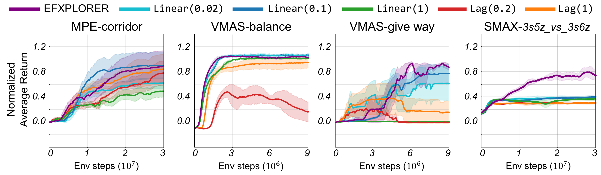
Performance comparison with alternative optimization strategies. Solid lines show the mean across 5 random seeds; shaded regions indicate the standard deviation. Linear(β) and Lag(λ0) denote the scalarization weight and the multiplier initialization, respectively.
Fixed budgets fail at both extremes: EF-z0 suppresses exploration entirely, while EF-zmax over-drives it and destabilizes coordination. The adaptive budget resolves this by matching exploration pressure to task feasibility. The update rate \(\alpha_z\) sets how reactive the budget is: a small value (0.1) suits simpler tasks like VMAS-balance, while a large value (0.7) accelerates discovery in the tight MPE-corridor bottleneck. Further ablations on state factorization, the intrinsic reward design, and the feasibility set are in the paper.
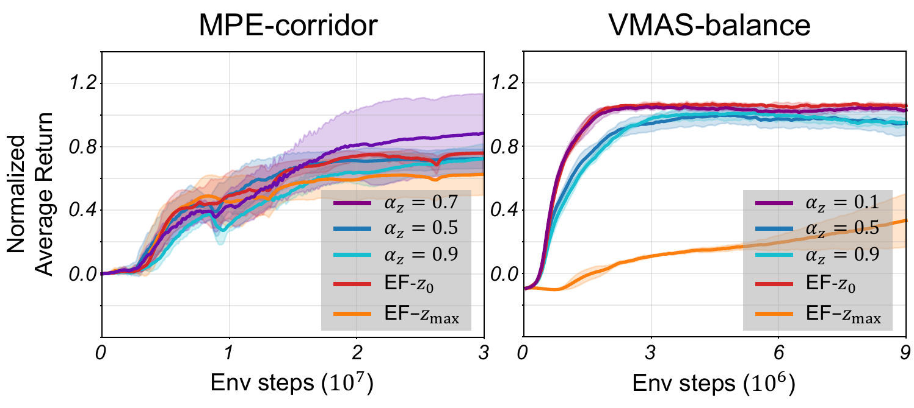
Exploration budget \(z\). Ablation of fixed-budget variants and update rates \(\alpha_z\), evaluated with EFXPLORER-MAPPO. Solid lines show the mean over 5 seeds; shaded regions indicate the standard deviation.
Eight agents, four per side, must pass through a corridor that fits at most two at a time to reach mirrored goals on the opposite side. The distance-to-goal reward becomes locally misleading at the corridor entrance, so pure goal pursuit produces collisions and stalls the team.
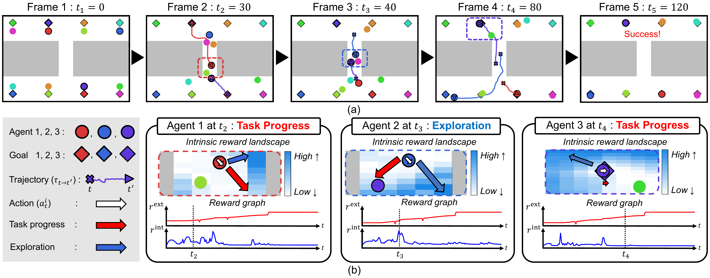
Qualitative analysis on MPE-corridor. (a) Episode snapshots (\(t_1\)–\(t_5\)) illustrating multi-agent interactions in the narrow passage. (b) Stepwise diagnostics for agents 1–3 (\(t_2\)–\(t_4\)): intrinsic reward landscapes over candidate next states, action directions maximizing extrinsic or intrinsic reward, executed actions, and corresponding instantaneous reward traces. When novelty points toward unproductive motion (toward a wall or away from the goal), EFXPLORER suppresses it and executes a task-aligned action (\(t_2\), \(t_4\)). At the corridor bottleneck (\(t_3\)) it permits a conservative detour to avoid collision: the extrinsic reward dips while the intrinsic reward spikes, so exploration is triggered exactly to resolve the interaction bottleneck.
Tasks span continuous-control team sports from VMAS, particle-world coordination from MPE, and StarCraft micromanagement from SMAX, run through the JaxMARL and BenchMARL interfaces.
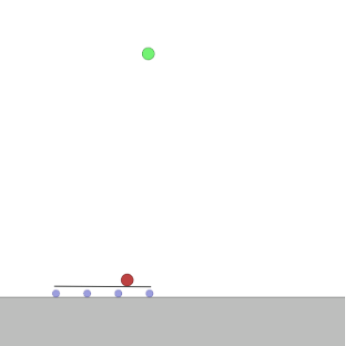
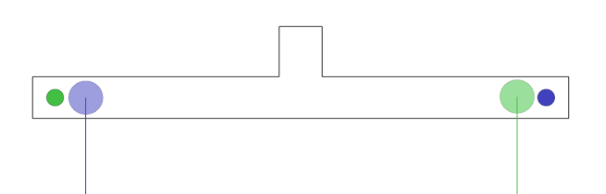
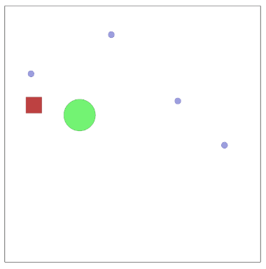
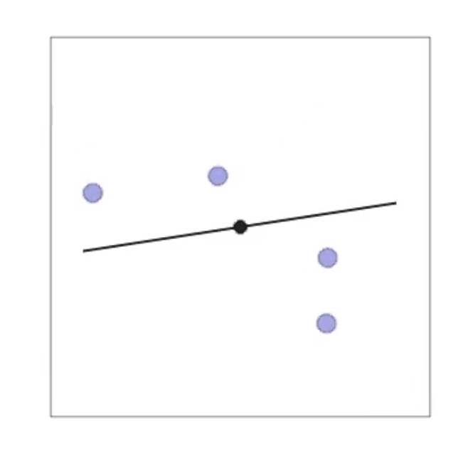
Discovering cooperative behavior in multi-agent reinforcement learning (MARL) is challenging due to the combinatorial complexity of joint state-action spaces, which hinders the emergence of coordinated behaviors from trial-and-error alone.
Intrinsic rewards are often used to aid discovery, but naively combining them with team objectives can distort the learning signal, compromising task performance.
We propose EFXPLORER, a constrained exploration framework that maximizes exploration objectives subject to a constraint that preserves established task performance. We solve the resulting problem using an epigraph reformulation that introduces adaptive exploration budgets. This approach separates intrinsic rewards from task objectives and regulates exploration through task feasibility.
To further encourage diverse and temporally extended exploration, we incorporate a successor distance-based intrinsic reward that captures long-horizon dependencies.
Empirically, our method outperforms strong baselines and induces novel cooperative strategies across SMAX, VMAS, and MPE benchmark suites.
Our current evaluation focuses on state-based setups; scaling EFXPLORER to high-dimensional observations such as raw images is an important next step. A further direction is broadening the epigraph formulation to jointly manage exploration, safety constraints, and human preferences within a unified framework.